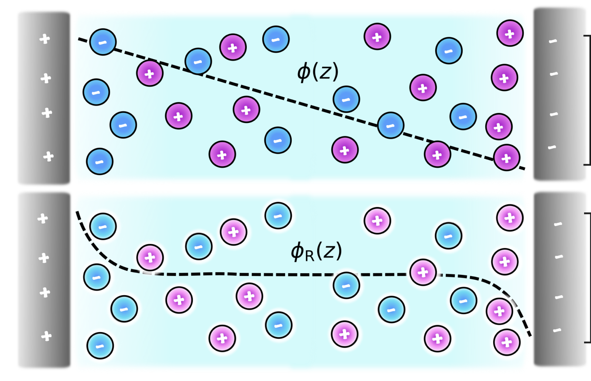
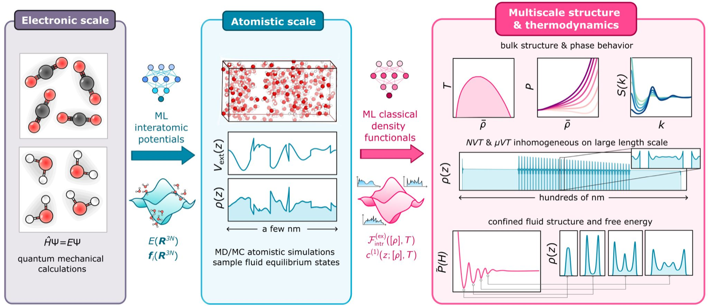
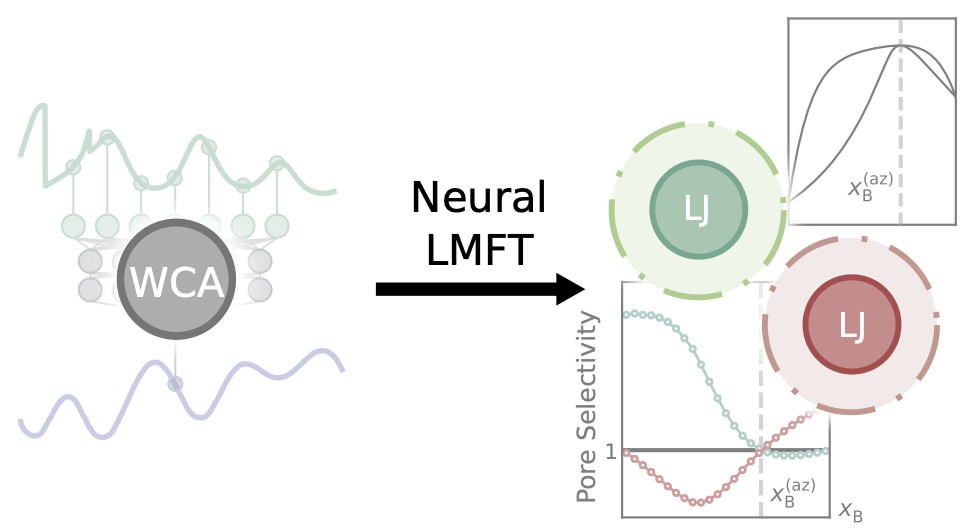
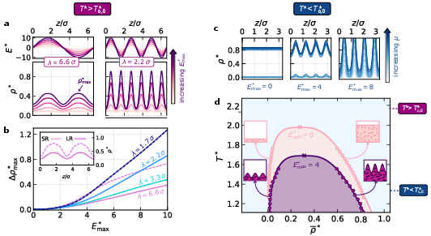
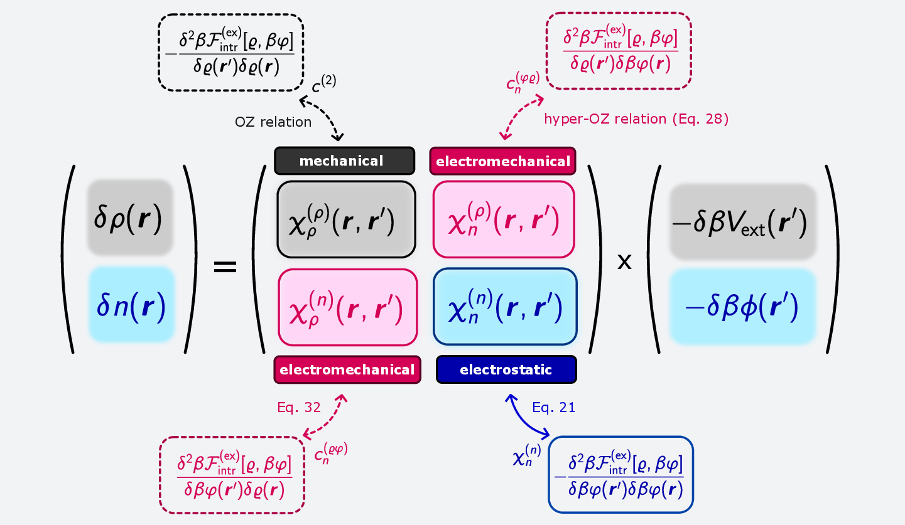
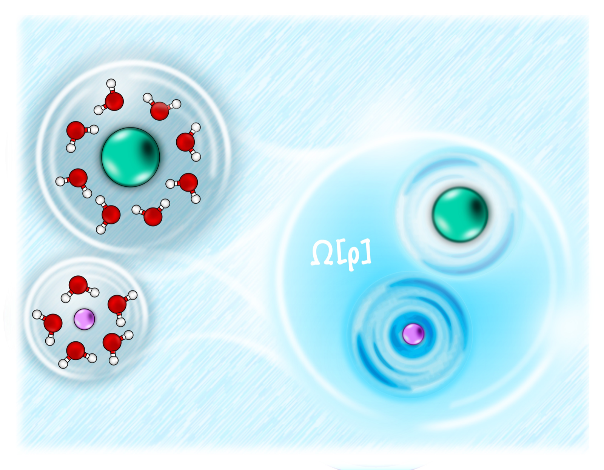
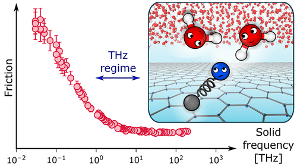
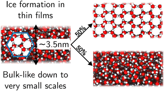

Cox Group Research
Our group has played a leading role in developing neural classical density functional theory (neural cDFT) for complex, molecular liquids — using machine learning not to replace physical theory, but to learn the free-energy functionals that cDFT needs, directly from simulation data. Not only does this allow to investigate systems on much larger length scales than possible with molecular simulations, but we can easily model systems in open equilibrium with a reservoir. An additional payoff is that neural cDFT is anchored in exact statistical mechanics; we do not need to assume ad hoc constitutive relations to gain conceptual understanding.
We're now applying this machinery to a range of systems where getting the microscopic physics right actually matters for macroscopic behaviour.
Check out our publications!
Neural cDFT for complex liquids
This is the methodological core of what we do. Starting from relatively inexpensive simulation data, we learn free-energy functionals for "complex" liquids — where complexity can arise from long-ranged interactions, nontrivial molecular geometry, or chemical composition — far beyond where they were trained. This avoids hand-picking a closed-form functional that only works for simple fluids, while ensuring that the ML model remains rooted in a solid theoretical framework.

Phys. Rev. Lett. 134, 148001 (2025)
Proc. Natl. Acad. Sci. USA 123, e2610049123 (2026)Chemical separation
Confined mixtures can behave very differently from their bulk counterparts, and we're using cDFT to understand why - what actually drives selectivity in a pore, and when bulk thermodynamic intuition (like the location of an azeotrope) breaks down or persists under confinement.

J. Phys. Chem. B 130, 4455 (2026)Device engineering: fields and dielectric response
Liquids respond to applied fields in ways that are still poorly captured by standard theory - and that response is exactly what you'd want to exploit or control in a device. We're building toward applications like blue energy cycles, where field- and concentration-gradients drive useful work from a liquid, by first getting the fundamental field response right.

Nat. Commun. 17, 2661 (2026)
J. Phys: Condens. Matter 37, 285101 (2025)Solvation
How a solute reshapes the liquid around it, across length scales, determines everything from reaction rates to ion transport. We use cDFT to describe solvation without the usual simplifying assumptions about dielectric response or ion size, so the same framework holds from the molecular scale up.

J. Chem. Phys. 161, 104103 (2024)Interfacial dynamics
Alongside this, we've contributed to a broader set of questions around how liquids behave dynamically at crystal and confined interfaces - including ice nucleation, salt dissolution and crystallization, and friction at water-carbon interfaces. This isn't a primary focus of the group, but it's shaped how we think about liquid-solid interfaces.

Nano Letters 23, 580 (2023)
Faraday Discuss. 249, 210 (2024)